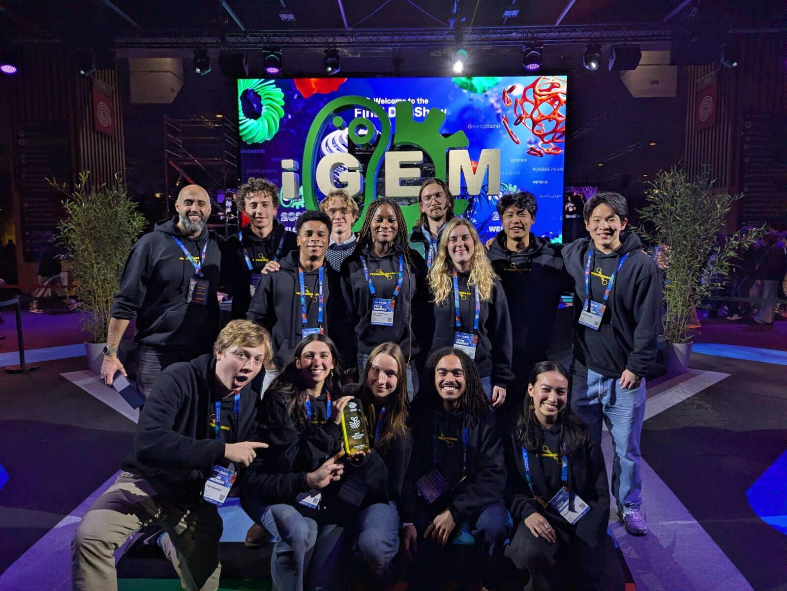

Cells can be programmed.
At the heart of Oxford's genetic engineering community since 2016.
- 1982Insulin from bacteria
- 2000First gene circuits
- 2013Malaria drug from yeast
- 2017CAR-T cancer therapy
- 2023CRISPR therapy
- 20??To be continued...
Talks, projects, hackathons, socials, building a community of people who engineer biology, in Oxford and internationally.
LacI
TetR
λ cI

Long-running international excellence: iGEM
iGEM is the world's largest genetic engineering competition, with over 400 student teams globally participating to build engineered organisms.
Oxford has participated regularly since 2014, and every team has won a gold or silver medal, with the 2026 team achieving Best Agriculture Project out of 463 teams.
Applications for Oxford iGEM 2027 will open soon...
Oxford iGEM history
| Year | Project | Result |
|---|---|---|
| 2026 | NECTARA programmable RNA pesticide to protect honey bees from Varroa mites. | Silver medalBest Agriculture Project |
| 2025 | CASPERA platform to detect and kill antibiotic-resistant bacteria. | Silver medal |
| 2024 | OneRingA plasmid that spreads between bacteria and kills the antibiotic-resistant ones. | Gold medal |
| 2023 | Bac2GlowA protein biosensor that lights up when drinking water is contaminated. | Silver medal |
| 2019 | ProQuorumA probiotic that senses C. difficile and kills it. | Gold medal |
| 2018 | miBiomeAn engineered probiotic to treat inflammatory bowel disease. | Gold medalBest Therapeutics Project |
| 2017 | See cruziA cheap, portable test for Chagas disease. | Gold medalBest Diagnostics Project |
| 2016 | Cure for CuA probiotic that mops up copper, to treat Wilson's disease. | Gold medal |
| 2015 | Oxford 2015E. coli that secrete proteins to break up biofilms and kill the bacteria inside. | Gold medal |
| 2014 | DCMationBacteria that detect and break down the solvent dichloromethane. | Gold medal |
Join us
We accept members from all areas of science, engineering, business and beyond. All events are free and no membership fee is required.